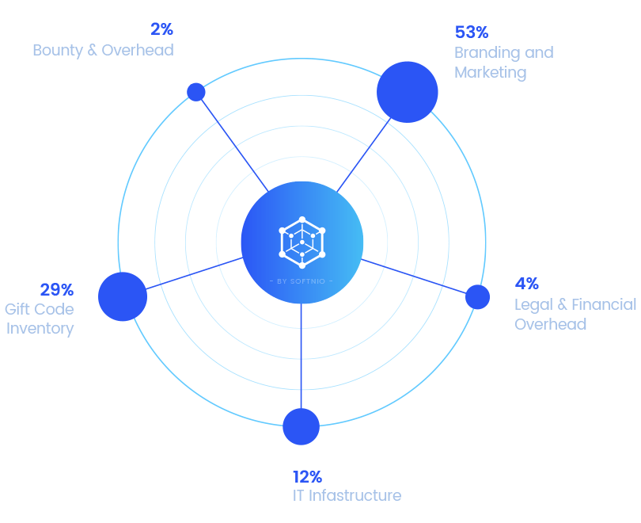

Deterministic AI
Agent Runtime
KNIRVSERVER is a deterministic execution environment for AI agents. Your AI agent is a process — we treat it like one. Kernel-level resource tracking via eBPF, policy enforcement before execution, and full behavioral forensics. Everything that observability tools tell you after the fact, we prevent in real time. Three integrated products: KNIRVSERVER (DVE runtime), KNIRVCLI (management interface), KNIRVCONTROLLER (orchestration).

? What is KNIRVSERVER
KNIRVSERVER is the operator node in a sovereign AI execution network. It provides Deterministic Validation Environments (DVEs) — sandboxed, monitored, reproducible containers where AI agents execute with kernel-level behavioral tracing and policy enforcement.
MLOps teams building with LangChain, LlamaIndex, or raw API calls have no deterministic execution environment. They get flaky outputs, untracked side effects, and no forensics when something goes wrong. KNIRVSERVER's DVE + eBPF + guardrails stack offers a runtime where AI agents execute in sandboxed, monitored, reproducible containers with full behavioral tracing.
The full stack — eBPF syscall telemetry, Cognitive Engine learning loop, WASM plugin runtime, policy-to-blockchain anchoring — is a coherent protocol, not just a product. Operators connect existing hardware (old Bitcoin miners, GPU rigs, x86 servers) to earn NRN tokens for providing containerized compute to the network.
KNIRVSERVER Ecosystem
Three integrated products that form the sovereign AI execution network. KNIRVSERVER bundles all runtime components (DVE, eBPF, cognitive engine, guardrails, WASM plugins, inference) into a single deployable system. KNIRVCLI and KNIRVCONTROLLER provide management and orchestration.

KNIRVSERVER bundles everything needed for deterministic AI execution: DVE containers with eBPF syscall telemetry, cognitive engine with adaptive policy thresholds, WASM plugin runtime, multi-model inference, guardrail engine, and blockchain-anchored audit trails. All other ecosystem components (KNIRVCHAIN, KNIRVGRAPH, KNIRVGATEWAY, KNIRVARENA, SDKs, TESTNET) are included.
- KNIRVSERVER: Deterministic AI Agent Runtime — DVE containers, eBPF tracing, guardrails, inference, WASM plugins, blockchain anchoring. Everything bundled.
- KNIRVCLI: Full-featured command-line interface for DVE management, agent deployment, node operations, and network administration.
- KNIRVCONTROLLER: Mobile interface for the network — wallet management, personal asset oversight, agent deployment, and real-time monitoring from your phone or tablet.
Three Products. One Network.
KNIRVSERVER bundles all runtime components into a single deployable system. KNIRVCLI and KNIRVCONTROLLER complete the ecosystem. Everything else — KNIRVCHAIN, KNIRVGRAPH, KNIRVGATEWAY, SDKs, TESTNET, KNIRVARENA, and more — is included in KNIRVSERVER.
KNIRVSERVER DVE
Deterministic AI Agent Runtime. Sandboxed DVE containers with eBPF syscall telemetry, cognitive engine with adaptive policy thresholds, WASM plugin runtime, multi-model inference, guardrail engine, policy-to-blockchain anchoring, and cryptographic evidence packs. Everything bundled — KNIRVCHAIN, KNIRVGRAPH, KNIRVGATEWAY, inference, SDKs, TESTNET, KNIRVARENA, and more included.
KNIRVCLI
Full-featured command-line interface. Deploy and manage DVE containers, monitor node health, configure guardrails, invoke inference, manage NRN wallets, and administer the full KNIRVSERVER stack. Scriptable, pipeable, SSH-ready. Built for power users and automated workflows.
KNIRVCONTROLLER
Mobile interface for the KNIRV Network. Manage your personal assets — wallets, NRN balances, agent deployments — and monitor network health from your phone or tablet. Same full functionality as the desktop experience, optimized for mobile.
NRN Economics
The NRN (Network Resolution Notice) token powers the KNIRVSERVER DVE economy. Operators earn NRN by providing containerized compute capacity, and developers spend NRN to deploy AI agents in deterministic, verifiable environments.
Token Generation
Proof-of-Connectivity by KNIRV-ROUTERs
Token Utility
Skill Invocation & Network Operations
Economic Model
Self-Sustaining Deflationary Loop
Miner Rewards
Connect old Bitcoin miners, GPU rigs, or x86 servers → earn NRN for DVE compute
Testnet Access
Self-host via GitHub or cloud DVE at knirv.com
Earn NRN with Your Hardware
Old miners, GPU rigs, x86 servers → DVE compute nodes
Token
Distribution

Network Fee
Allocation

Our Roadmap
Q3 2026
Testnet Launch — KNIRVSERVER testnet goes live for early operators
Q4 2026
Phase 1: KNIRVSERVER DVE Mainnet Launch & Operator Onboarding
Q1 2027
Launch KNIRVCLI & KNIRVCONTROLLER — Full Ecosystem
Q2 2027
Phase 2: Enhanced Intelligence & Agent Capabilities
Q2 2027
Advanced DVE specialization & miner onboarding pipeline
Q2 2027
Skill licensing & automated royalty payments
Q3 2027
Phase 3: Experiential Integration & Advanced Learning
Q4 2027
DVE fleet orchestration via KNIRVCONTROLLER & KNIRVCLI release
Q4 2027
Formal verification & Zero-Knowledge Proofs
2028
Phase 4: Mainnet Launch & Cross-Ecosystem Expansion
2028
Autonomous Governance & Universal AI Layer
Join the Revolution
The KNIRV Network is transitioning from corporate deployment to community ownership. Be part of building the world's first truly democratic AI infrastructure.
Mine NRN with Your Existing Hardware
Web3 AI community — connect your old Bitcoin miners, GPU rigs, or x86 servers to the KNIRVSERVER network. Your hardware becomes a DVE (Deterministic Validation Environment) node, providing containerized compute time to AI developers and earning NRN tokens in exchange.
No ASIC? No problem. GPUs and standard x86 servers are welcome. Any hardware capable of running containers can participate.
Self-Host on GitHub
Deploy KNIRVSERVER independently using our open-source project. Full control, no dependencies. Join the network as an independent operator.
- Deploy KNIRVSERVER on your own infrastructure
- Full operator access and node management
- Earn NRN by providing DVE compute capacity
- Join the open-source community
Cloud DVE at knirv.com
Access the hosted KNIRVSERVER DVE solution for immediate use. No setup required — just deploy your AI agents and start validating.
- Instant DVE access — no infrastructure needed
- Managed by KNIRV Corporation
- Pay-per-use pricing model
- Enterprise support available
DVE Node Operators
Connect your existing hardware (old Bitcoin miners, GPU rigs, x86 servers) to the KNIRVSERVER network and earn NRN tokens for every containerized compute task executed on your node.
- Convert old mining rigs into DVE nodes
- GPU rigs and x86 servers welcome
- Earn NRN for containerized compute time
- No specialized hardware required
Earn: NRN tokens per DVE compute cycle
Developers & AI Engineers
Use KNIRVSERVER DVE to deploy AI agents in sandboxed, deterministic environments. Build with KNIRVCLI and orchestrate with KNIRVCONTROLLER.
- Deterministic AI agent execution
- Kernel-level behavioral tracing (eBPF)
- Policy enforcement with blockchain audit trails
- WASM plugin runtime for custom extensions
Earn: Build on the network, get NRN rewards
Built on Democratic Principles
- Distributed Ownership: No single entity controls the network
- Transparent Governance: Community votes on all major decisions
- Open Source: All core components are publicly auditable
- Economic Democracy: Value flows to contributors, not just capital holders
- Fair Token Distribution: 40% reserved for community development
- Anti-Whale Mechanisms: Quadratic voting prevents centralization
- Contribution Weighting: Active participation increases governance power
- Revenue Sharing: Network fees distributed to all participants
Ready to Shape the Future of AI?
Join our community and be part of the transition to democratic AI infrastructure.
Learn more about our founding team at KNIRV Corporation